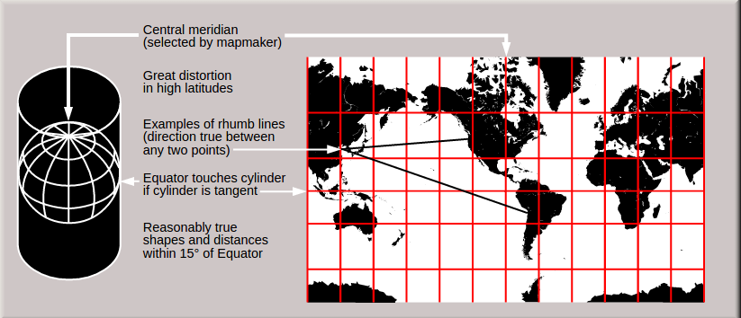

地图坐标
Google Maps API 使用以下几种坐标系：
- 纬度和经度值，唯一对应地球上的一个点。（Google 使用世界大地测量系统 WGS84 标准。） （也称作WGS 1984、EPSG:4326）
- 世界坐标，唯一对应地图上的一个点。
- 图块坐标，对应特定缩放级别地图上的特定图块。
世界坐标
每当 Maps API 需要将世界位置转换为地图（屏幕）上的位置时，首先需要将纬度和经度值转换为“世界”坐标。
此转换过程使用地图投影来完成。为此，Google Maps 使用墨卡托投影法
为便于计算像素坐标，我们假定缩放级别为 0 的地图为具有基本图块尺寸的单个图块。
然后，我们在缩放级别 0 定义像素坐标对应的世界坐标，使用投影将纬度和经度转换为此基本图块上的像素位置。
该世界坐标为从地图投影原点到特定位置测量的浮点值。请注意，由于该值为浮点值，
因此，可能比显示的地图图像的当前分辨率更精确。换言之，世界坐标与当前缩放级别无关。
简言之世界坐标是，将经纬度值通过投影算法映射到单个图块上（256 * 256）所得到的浮点值对。
Google Maps 中的世界坐标是以墨卡托投影的原点（即地图西北角，经度为 180 度，纬度约 85 度）为起点测量的，
在 x 方向上朝东（向右）增大，在 y 方向上朝南（向下）增大。由于基本的墨卡托 Google Maps 图块为 256 x 256 像素，
因此，可用的世界坐标空间为 {0-256}, {0-256}
像素坐标
世界坐标反映的是指定投影上的绝对位置，但我们需要将该坐标转换为像素坐标，以确定指定缩放级别的“像素”偏移量
像素坐标采用以下公式进行计算：
pixelCoordinate = worldCoordinate * 2zoomLevel
请注意，根据上述公式，每个增大的缩放级别在 x 和 y 方向上均为原来的两倍大。
因此，缩放级别每增大一级，分辨率为前一个级别的四倍。
例如，在缩放级别 1，地图包含 4 个 256x256 像素图块，因而像素空间为 512x512。
在缩放级别 19，地图上的每个 x 和 y 像素可使用 0 到 256 * 219 之间的值进行引用
由于世界坐标是建立在地图的图块大小基础上的，请注意，对于缩放级别 0，像素坐标等于世界坐标。
因此，像素坐标的整数部分的作用是标识该位置在当前缩放级别下的确切像素。
现在，我们可以在每个缩放级别精确表示地图上的每个位置。
Maps API 在地图中心构造指定缩放级别的视区（如 LatLng），以及包含的 DOM 元素的大小，
并将此边界框转换为像素坐标。然后，API 从逻辑上确定位于指定像素边界内的所有地图图块。
每个地图图块均使用图块坐标进行引用，该坐标大大简化了地图图像的显示。
总结一下：
一、根据缩放级别可以确定展示地图需要的图块数与像素坐标范围。
二、通过Web Map提供的API指定地图的中心点（将中心点经纬度换算为像素坐标）和DOM元素大小确定显示范围。
三、确定指定像素边界范围内的所有地图图块。
四、加载图块显示地图。

图块坐标
为了优化地图系统性能，提高地图下载和显示速度，所有地图都被分割成256 x 256像素大小的正方形小块。
由于在每个放大级别下的像素数量都不一样，因此地图图片（Tile）的数量也不一样：
map width = map height = 2zoomLevel tiles
每个tile都有一个XY坐标值，从左上角的(0, 0)至右下角的(2zoomLevel–1, 2zoomLevel–1)
例如在3级放大级别下，所有tile的坐标值范围为(0, 0)至(7, 7)，如下图：

已知一个像素的XY坐标值时，我们很容易得到这个像素所在的Tile的XY坐标值：
tileX = floor(pixelX / 256)
tileY = floor(pixelY / 256)
为了简化索引和存储地图图片，每个tile的二维XY值被转换成一维字串，即四叉树键值（quardtree key，简称quadkey）。
每个quadkey独立对应某个放大级别下的一个tile，并且它可以被用作数据库中B-tree索引值。
为了将坐标值转换成quadkey，需要将Y和X坐标二进制值交错组合，并转换成4进制值及对应的字符串。
例如，假设在放大级别为3时，tile的XY坐标值为（3，5），quadkey计算如下:
tileX = 3 = 011（二进制）
tileY = 5 = 101（二进制）
quadkey = 100111（二进制） = 213（四进制） = “213”
Quadkey还有其他一些有意思的特性。
第一，quadkey的长度等于该tile所对应的放大级别；
第二，每个tile的quadkey的前几位和其父tile（上一放大级别所对应的tile）的quadkey相同；
下图中，tile 2是tile 20至23的父tile，tile 13是tile130至133的父tile：

最后，quadkey提供的一维索引值通常显示了两个tile在XY坐标系中的相似性。
换句话说，两个相邻的tile对应的quadkey非常接近。这对于优化数据库的性能非常重要，
因为相邻的tile通常被同时请求显示，因此可以将这些tile存放在相同的磁盘区域中，以减少磁盘的读取次数。
实战应用一下，如果大家用过httpWatch的话，可以发现获取必应地图tile的URL如下：
http://r3.tiles.ditu.live.com/tiles/r13023.png?g=47
我们看到其中r13023.png，r表示道路图片，13023就是tile所对应的quadkey。
显然这个tile所在的地图放大级别为5，其祖父tile为上图黑框中130。
墨卡托投影
一、墨卡托投影
墨卡托投影，又称正轴等角圆柱投影，由荷兰地图学家墨卡托(G.Mercator)于1569年创拟。
假设地球被套在一个圆柱中，赤道与圆柱相切，然后在地球中心放一盏灯，
把球面上的图形投影到圆柱体上，再把圆柱体展开，就形成以一幅墨卡托投影的世界地图（如下图）。
从上图中可以看出，X轴的刻度是等距的，Y轴方向越靠近两极变形越大。
查看原图

二、Web墨卡托投影
Web墨卡托投影坐标系，广泛应用与Google Map、Bing Map等地图投影中。它以整个世界范围，
赤道作为标准纬线，本初子午线作为中央经线，两者交点为坐标原点，向东向北为正，向西向南为负。
X轴：赤道半径取值为6378137米，则赤道周长为2*PI*r ，以坐标原点为中心，东西南北各方向为其值一半，
即 PI*r= 20037508.3427892，因此X轴的取值范围：[-20037508.3427892,20037508.3427892]。
Y轴：由墨卡托投影的公式可知，当纬度φ接近两极，即90°时，y值趋向于无穷。
为了使用方便，就把Y轴的取值范围也限定在[-20037508.3427892,20037508.3427892]之间，形成一个正方形。
因此在投影坐标系（米）下的范围是：
最小(-20037508.3427892, -20037508.3427892 )到最大 (20037508.3427892, 20037508.3427892)。
经过反算，可得到纬度85.05112877980659。因此纬度取值范围是[-85.05112877980659，85.05112877980659]。
尽管Mercator Projection会使地球比例尺和某些区域变形，尤其在两极，它还是有不可磨灭的贡献的：
1、首先它是共形映射（Conformal Projection），即保留了物体的原有形状。
这在展示卫星照片的时候很重要，因为我们所看到的正方形建筑就应该是正方形的，而不是长方形的。
2、其次它是柱状体映射，即南北极在地图的正下、上方，而东西方向处于地图的正右、左。
由于Mercator Projection在两极附近是趋于无限值得，因此它并没完整展现了整个世界，地图上最高纬度是85.05度。
为了简化计算，我们采用球形映射，而不是椭球体形状。虽然采用Mercator Projection只是为了方便展示地图,
需要知道的是，这种映射会给Y轴方向带来0.33%的误差。